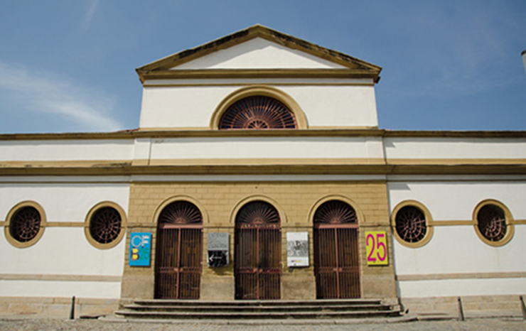
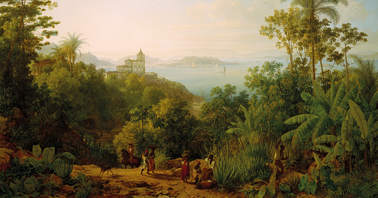

Delerive, Nicolas-Louis-Albert. O embarque da família real portuguesa para o Brasil em 1807 , séc. XIX. 62,5 × 87,8 cm. Museu Nacional dos Coches, Lisboa.
Museu Nacional dos Coches, Lisboa
No início do século XIX, o Brasil foi marcado por grandes mudanças sociais, políticas e culturais com a chegada da família real portuguesa (1808) – primeiramente, fixaram-se em Salvador e, depois, definitivamente, no Rio de Janeiro. Pela primeira vez na história europeia uma colônia passava a sediar a Corte.
No Rio de Janeiro, o soberano português inicia uma série de reformas administrativas, sociais, econômicas e culturais para adaptar a cidade às necessidades de uma capital do Reino e aos costumes da corte, colocando, assim, a cultura local no mesmo nível do desenvolvimento português. São fundadas as primeiras instituições, tais como o Banco do Brasil, a Biblioteca Real, o Museu Real, a Impressão Régia (casa impressora durante o período colonial) e a Academia Imperial de Belas Artes, a primeira Escola de Belas Artes brasileira, liderada pela Missão Francesa.
Esses fatos desencadearam uma série de transformações, diversos conflitos culturais, ecletismo e transições, especialmente no campo artístico.
Este capítulo aborda esse momento histórico e seu impacto na cultura e na arte brasileiras, além de relacionar essas mudanças com as produções dos principais artistas do período.
Neste capítulo, serão abordadas as habilidades EM13LGG601 , EM13LGG602 , EM13LGG603 e EM13LGG604
DAVID, Jacques-Louis. The Emperor Napoleon in His Study at the Tuileries, 1812. Óleo sobre tela, 1251 × 2039 cm. National Gallery of Art, Washington, D.C. National Gallery of Art, Washington
DEBRET, Jean-Baptiste. Retrato de D. João VI, 1817. Óleo sobre tela, 60 × 42 cm. Museu Nacional de Belas Artes (MNBA), Rio de Janeiro. Debret/ Museu Nacional de Belas Artes, Rio de Janeiro
Século XIX no Brasil: a influência estrangeira e o ecletismo
No início do século XIX, os exércitos de Napoleão Bonaparte invadiram Portugal e, em razão disso, Dom João VI e sua corte, com o apoio da Inglaterra, partiram para a colônia, transferindo o poder de Portugal para o Brasil.
Em 1808, a comitiva real chegou a Salvador e foi recebida em grande solenidade pelo conde da Ponte, governador da Capitania da Bahia. Posteriormente, a esquadra partiu de Salvador rumo ao Rio de Janeiro, tornando-o capital do Reino de Portugal. Com a família real, desembarcaram a corte de nobres, servos e empregados domésticos, somando cerca de 15 mil pessoas. Na bagagem, além de objetos e pertences pessoais, trouxeram uma biblioteca com mais de 60 mil livros.
Em 1816, chega à sede do reino um grupo de artistas franceses chefiado por Joachim Lebreton (1760-1819), que estava encarregado da fundação da Academia Imperial de Belas Artes (inaugurada em 1826), em que os alunos aprenderiam artes e ofícios artísticos. Esse grupo ficou conhecido como Missão Artística Francesa.
A Missão Artística Francesa e a arte acadêmica no Brasil
A vinda da família real para o Rio de Janeiro provocou uma série de reformas administrativas, econômicas, sociais e culturais, de modo a adaptar a cidade às necessidades da nobreza. As primeiras fábricas foram fundadas, o Banco do Brasil foi instituído, a Imprensa Régia foi instaurada, entre outras ações que impactariam a vida na colônia. A partir de então, o Brasil passou a receber frequente influência da cultura europeia, o que se evidenciou ainda mais com a vinda da Missão Francesa.
O grupo, além de Joachim Lebreton, teve como principais representantes os pintores Jean-Baptiste Debret (1768-1848) e Nicolas-Antoine Taunay (1755-1830); os escultores Auguste-Marie Taunay (1768-1824), Marc Ferrez (1843-1923) e Zépherin Ferrez (1797-1851); e o arquiteto Grandjean de Montigny (1776-1850).
... após a criação do Reino Unido de Portugal e Algarves, Dom João VI estava muito preocupado com o desenvolvimento cultural da colônia, agora capital do reino. Ele trouxe recursos necessários para a transformação e modernização da nova sede do reino. Estava também preocupado em instituir a educação formal, abandonada após a expulsão dos jesuítas, responsáveis pelo sistema educativo no Novo Mundo. Naquele momento, na Europa, o império de Napoleão perdeu o poder, e ele foi exilado. Dom João VI e o Conde da Barca (1754-1817), António de Araújo e Azevedo, articularam a contratação de alguns artistas franceses que desejavam sair da França, pois haviam apoiado Napoleão, e assim empreenderam o primeiro projeto de institucionalização do ensino da Arte para a elite brasileira.
Joachim Lebreton foi o chefe da Missão Artística Francesa e secretário da Classe de Belas Artes do Instituto da França. Considerado um intelectual muito respeitado, trouxe, além de seus conhecimentos, um acervo de obras ainda não visto no Brasil. Foi o primeiro a se empenhar na missão de institucionalizar o ensino das artes no país, mas morreu sem concluir seu intuito.
Nicolas-Antoine Taunay é considerado um dos mais importantes nomes da Missão Francesa. Com a queda do imperador e ciente da situação da realeza portuguesa, o pintor escreveu à rainha de Portugal, solicitando que ele e seus companheiros fossem contratados e pudessem vir ao Brasil por não se sentirem seguros na França, devido às perseguições políticas. Em 1816, chegou com a família como integrante da Missão Artística Francesa. Nos cinco anos em que residiu no Brasil, pintou diversos quadros com diferentes temáticas: bíblicas, mitológicas, históricas, paisagens e retratos infantis. Mais de 30 paisagens do Rio de Janeiro de sua autoria são consideradas importantes registros históricos nacionais.

TAUNAY, Nicolas-Antoine. Vista do alto do Morro do Santo Antônio, 1816. Óleo sobre tela, 45 × 56,5 cm. Museu Nacional de Belas Artes (MNBA), Rio de Janeiro. A paisagem com forte impressão de luminosidade, típica de um país tropical, apresenta vista, com o Pão de Açúcar ao fundo.
History and Art Collection/Alamy/Fotoarena/ Museu Nacional de Belas Artes (MNBA), Rio de Janeiro
Jean-Baptiste Debret ficou conhecido como “a alma da Missão Francesa”. Era desenhista, aquarelista, pintor cenográfico, decorador e professor de pintura. Organizou a primeira exposição de arte no Brasil. Atuou nos projetos de ornamentação da cidade do Rio de Janeiro para os festejos da aclamação de Dom João VI como rei de Portugal, Brasil e Algarve. No entanto, foi com suas pinturas no livro Viagem pitoresca e histórica ao Brasil que ganhou destaque, tanto por aqui quanto na Europa, expondo de maneira detalhista a sociedade brasileira do século XIX.

DEBRET, Jean-Baptiste. Feitor castigando escravo , 1835. Detalhe de litogravura. Fundação Biblioteca Nacional/DRD/Div. de Iconografia, Rio de Janeiro.
Fundação Biblioteca Nacional/DRD/Div. De Iconografia, Rio de Janeiro
Auguste-Marie Taunay era irmão de Nicolas-Antoine Taunay. Foi escultor e professor de francês. Reconhecido por seu trabalho em Paris, foi contratado para executar a decoração da escadaria do Palácio do Louvre e do Arco do Triunfo do Carroussel, em 1807. Além de ornamentar a cidade do Rio de Janeiro para as festas de Aclamação de D. João VI como rei de Portugal, Brasil e Algarve, produziu diversas esculturas.
Grandjean de Montigny foi o principal arquiteto da Missão Francesa, responsável pela implantação do estilo neoclássico. Foi autor e responsável pela edificação da Academia Imperial de Belas Artes, onde foi realizada a primeira exposição de arte no Brasil, com pinturas trazidas pelos membros da Missão Francesa. Aos poucos, o acervo cresceu, com aquisições e doações.
Alguns desses artistas permaneceram temporariamente em terras brasileiras; outros firmaram raízes e deixaram descendentes ou discípulos. É o caso da família Taunay, da qual vários membros se destacaram na pintura e na literatura, como Alfredo d’Escragnolle Taunay (1843-1899), ou visconde de Taunay, autor de obras como A retirada de Laguna (1867) e Inocência (1872). Como discípulo, Debret teve Manuel de Araújo Porto Alegre, grande aluno que esteve à frente da Academia de Belas Artes de 1854 a 1857 e contribuiu de forma ampla e decisiva para a vida cultural brasileira.
Esses artistas trouxeram as ideias iluministas, que libertavam as temáticas artísticas dos dogmas da Igreja Católica e substituíam o pensamento filosófico pelo saber acadêmico e científico. Em 1816, o grupo de artistas organizou a Escola Real das Ciências, Artes e Ofícios e criou as estruturas necessárias para o ensino acadêmico no Brasil – escola essa que, em 1826, passou a ser conhecida como Academia Imperial de Belas Artes.
Viagem pitoresca e histórica ao Brasil, Jean-Baptiste Debret. Belo Horizonte: Itatiaia, 2008.
No período em que ficou no Brasil, Debret retratou a vida e os costumes do povo brasileiro: dos grandes acontecimentos históricos ao cotidiano do homem comum. Olhar suas pinturas é caminhar pelas ruas do Brasil do século XIX.
Nas ilustrações, o artista expressa a ambiguidade da sociedade brasileira com a fragilidade das formas dos personagens, que sofrem pressão do espaço.
O estilo neoclássico imperou na pintura e na arquitetura brasileiras como estilo oficial da corte portuguesa, embora de influência eminentemente francesa. A Missão Francesa representou, portanto, a maior profissionalização artística no Brasil, formando gerações de pintores e arquitetos nacionais e rompendo bruscamente com o Barroco brasileiro.
O Academicismo no Brasil deixou um acervo de grande valor histórico, registrando cenas do cotidiano do Brasil colonial. Sem as gravuras de Debret, por exemplo, não haveria um registro visual dos aspectos sociais, etnográficos e das paisagens urbanas e rurais nas primeiras décadas do século XIX no Brasil.
Atualmente ainda há muitas discussões no meio artístico que contestam o estatuto de “missão” conferido ao grupo de artistas franceses e até mesmo lamentam a orientação neoclássica que os artistas atribuíram à arte oficial do período imperial.
Os artistas vinculados ao Barroco consideravam o estilo neoclássico uma segunda colonização cultural e reagiram desfavoravelmente a essa orientação da Missão Francesa. Com isso, os artistas barrocos foram rejeitados pela elite e, sem apoio financeiro, o estilo foi desaparecendo rapidamente.
MONTIGNY, Grandjean de. Projeto da Praça do Comércio (fachada) , s.d., traço e aguada de nanquim, 53,5 × 34,8 cm. Fundação Biblioteca Nacional, Rio de Janeiro.
Fundação Biblioteca Nacional/DRD/Div.d Iconografia, Rio de Janeiro
Fachada do edifício do atual Centro Cultural Casa França-Brasil.
Michel.schettert (CC BY-SA 4.0)/Wikimedia Commons
Assim, o estrangeirismo foi imposto na cultura e na arte brasileiras. A família real fazia solicitações e encomendas que acabaram por alterar a pintura, a arquitetura e a paisagem brasileiras. Grandjean de Montigny e Jean-Baptiste Debret, por exemplo, trabalharam na construção de edifícios oficiais, como o da Bolsa de Comércio, hoje sede da Casa França-Brasil. Além disso, criaram a cenografia de grandes cerimônias oficiais no Rio de Janeiro.
Grandes e lentas mudanças
Apesar de todo o apoio e encantamento nacionais com a arte estrangeira, a existência de uma escola de Artes em terras brasileiras enfrentou obstáculos. A lentidão administrativa e política juntou-se ao clima hostil dos antigos bonapartistas e às divergências entre os artistas que faziam parte da Missão Francesa. Além disso, as mortes do Conde da Barca e de Joachim Lebreton agravaram o quadro. Contrariado com a situação, Nicolas Taunay retornou à França em 1821, acompanhado de sua esposa e um de seus filhos, a fim de recuperar o prestígio perdido em 1815. Deixou quatro filhos no Rio.
Foi preciso esperar até 1826 para que a Academia Imperial de Belas Artes, cuja sede foi concebida por Grandjean de Montigny, fosse criada. Em 1831, seus estatutos foram definitivamente estabelecidos, com base no projeto francês de 1824. Assim, nascia a Academia Imperial de Belas Artes, com um nome bastante diferente do proposto em seu projeto inicial, como escola de artes e ofícios.
O prédio, localizado na Rua do Ouvidor, foi demolido em 1930. Hoje, no lugar, encontra-se o Museu Nacional de Belas Artes. Do prédio original, restou apenas o frontão, atualmente localizado no Jardim Botânico do Rio de Janeiro, preservado e transportado para o parque nos anos 1940 por insistência de Lúcio Costa (1902-1998), arquiteto responsável pelo plano piloto de Brasília.
Embora sempre tenha existido uma mistura de estilos durante a história da arquitetura, a expressão "arquitetura eclética" é usada em referência aos estilos surgidos durante o século XIX, que exibiam combinações de elementos da arquitetura clássica, medieval, renascentista, barroca e neoclássica.
A arquitetura eclética foi divulgada pela Academia Imperial de Belas Artes e por sua sucessora, a Escola Nacional de Belas Artes, ao longo do século XIX. O ensino arquitetônico acadêmico no Rio de Janeiro, que inicialmente privilegiou o Neoclassicismo, mais tarde adotou o ecleticismo de origem europeia. Aos poucos, diversas instituições artísticas, em outros lugares do Brasil, também adotaram a arquitetura eclética, como o Liceu de artes e ofícios de São Paulo e o Palácio da Liberdade, em Belo Horizonte.
As obras do acervo da Academia Imperial de Belas Artes foram reunidas no Museu Nacional de Belas Artes, também no Rio de Janeiro.
Na arquitetura brasileira, o Academicismo trouxe uma tendência conhecida como ecletismo ou ecleticismo. Em arquitetura, o ecletismo é a mistura de estilos arquitetônicos do passado para a criação de uma nova linguagem arquitetônica, mesclando diferentes estilos.
A arquitetura eclética se utiliza de vários estilos estéticos históricos e se caracteriza pela simetria, busca de grandiosidade, rigorosa hierarquização dos espaços internos e riqueza decorativa. Quase todas as capitais brasileiras em expansão, no início do século XX, adotaram construções com base no ecletismo arquitetônico. O Palácio da Liberdade, em Belo Horizonte, construído em 1897, é um exemplo desse estilo arquitetônico.
Vista frontal do Palácio da Liberdade, que apresenta um traçado neoclássico, mas mescla estilos arquitetônicos.
Alamy/Fotoarena
Artistas europeus e as expedições científicas e artísticas no Brasil
As expedições artísticas e científicas no Brasil, em geral organizadas e integradas por estrangeiros, foram constantes desde o início da colonização, mas tiveram grande expansão durante o século XIX.
Com a vinda de Dom João VI e da corte portuguesa, as expedições artísticas e científicas se ampliaram. Muitos espécimes naturais registrados e coletados foram, em grande parte, encaminhados a museus e instituições europeias. Nessa época, teve início um ciclo de viagens e missões científicas que deram novo impulso ao desenvolvimento artístico e científico no Brasil. As peças coletadas foram alocadas em instituições brasileiras criadas pelo governo português, como Jardim Botânico, Biblioteca Nacional, Academia Imperial de Belas Artes, entre outras.
Além dos artistas da Missão Francesa, vieram ao Brasil outros pintores europeus, como o austríaco Thomas Ender (1793-1875) e o alemão Johann Moritz Rugendas (1802-1858), atraídos pelas expedições científicas, pela promessa de aventura, pela possibilidade de conhecer a luminosidade dos trópicos e por uma burguesia que desejava se tornar mecenas e ser retratada em pinturas.
Questões sociais: ontem e hoje
Thomas Ender foi um pintor que fez parte da expedição científica de Johann Baptiste von Spix e Carl Friedrich Philipp von Martius (os dois últimos acompanharam a princesa Leopoldina em sua viagem para o Brasil a fim de se casar, em 1817, com o futuro imperador Dom Pedro I).
Ender chegou ao Brasil em 1817, aos 23 anos, e permaneceu por 11 meses; retratou paisagens e cenas do cotidiano de São Paulo e do Rio de Janeiro, formando um conjunto de 800 aquarelas. Suas obras estão conservadas na Academia de Belas Artes de Viena e no Museu Brasileiro de Viena.
Johann Moritz Rugendas foi um pintor que viajou por todo o Brasil, de 1822 a 1825. Retratou a flora, a fauna, os povos e os costumes brasileiros. Participou como desenhista e documentarista da Expedição Langsdorff (1824-1829), do barão e médico alemão Georg Heinrich von Langsdorff (1774-1852).
RUGENDAS, Johann Moritz. Roda de Capoeira , c. 1835. Litogravura. Coleção particular.
Ender, Thomas. Vista do Rio , 1817. Óleo sobre tela, 104 × 188 cm. Academia de Belas Artes de Viena.
akg-images/Album /Fotoarena/Academia de Belas Artes de Viena
Por dentro da arte
As obras de Rugendas são consideradas importantes registros históricos dos costumes brasileiros, da escravidão e da cultura negra.
A produção artística de Rugendas revela aspectos socioculturais que se perderam em outros registros e documentos históricos, devido ao processo de invisibilidade e desvalorização da história e da cultura dos povos africanos e afrodescendentes no país. A obra Negros no fundo do porão (imagem reproduzida a seguir) retrata a cena do porão de um navio negreiro, revelando as condições desumanas e insalubres de vida e de transporte a que eram submetidos os africanos capturados para serem escravizados. Mas a cena não mostra evidências do que realmente se passava no tráfico negreiro, como revela o poema “O navio negreiro” (1869), do poeta romântico Castro Alves (1847-1871), pois Rugendas não teve contato real com um navio negreiro. Em meados do século XIX, a escravidão estava em declínio em outros países.
No Brasil, no entanto, durante o período colonial, a mão de obra era de africanos escravizados. Eles eram trazidos de diversas partes do continente africano e distribuídos pelo Brasil. Até 1845, o mercado escravocrata movimentava a economia colonial, apesar do movimento abolicionista.
É no contexto do processo abolicionista, com a promulgação da lei Bill Alberdeen, na Inglaterra, em 1845, que proibia o tráfico de escravos africanos, que se inserem as litografias de Rugendas, utilizadas como propaganda abolicionista, em pauta na época. O livro Viagem pitoresca através do Brasil (1835), de Rugendas, representou a conclusão da viagem do artista pela América Latina; nele, reuniu 100 litografias em preto e branco, impressas em 20 fascículos. Cada fascículo era acompanhado por um texto do diário de viagens do escritor alemão Victor Aimé Huber (1800-1869), amigo do pintor, que foi traduzido para o francês e o alemão.

RUGENDAS, Johann Moritz. Negros no fundo do porão [O Navio Negreiro] , c. 1835. Litogravura, 35,5 × 51,3 cm. Coleção particular.
Coleção particular
Mãos à obra
Com base na trajetória dos artistas viajantes das expedições científicas e artísticas durante o século XIX, no Brasil, e considerando especialmente o trabalho de Rugendas e de Debret, faça um registro fotográfico de sua comunidade. Fotografe cenas que traduzam o mundo em que você vive sob o olhar social, político e/ou econômico. Ao final, monte uma apresentação digital ou em papel com maior gramatura, como Canson, para a turma.
1
Famema-SP 2017 Johann Moritz Rugendas esteve no Brasil entre 1821 e 1825, inicialmente como membro da Expedição Langsdorff. Desenhista e documentarista, produziu obras sobre paisagens, cenas cotidianas e tipos humanos, como a representada a seguir, denominada Família de fazendeiros (1825). Nessa obra, observam-se:
Murilo Pontes/Coleção particular
- a influência da arquitetura colonial portuguesa e a simplicidade dos trajes usados em público.
- a presença de símbolo religioso e a convivência de senhores e escravos em um mesmo espaço.
- as relações escravistas de produção e a riqueza e diversidade do mobiliário das casas de fazendeiros.
- o patriarcalismo na organização familiar e a importância da educação para a ascensão social.
- o vestuário como forma de eliminação das distinções sociais e a incorporação de costumes alimentares indígenas.
2
Leia as afirmativas sobre o Academicismo no Brasil.
- O Academicismo no Brasil foi um movimento institucional que caracterizou a produção artística durante a segunda metade do século XIX, fomentado pelos ideais imperialistas e inspirado no movimento neoclássico europeu.
- O Academicismo foi o primeiro movimento artístico genuinamente brasileiro, já que surgiu nas camadas mais populares que defendiam um maior empenho acadêmico na produção artística nacional.
- A chegada da Missão Artística Francesa deu início à institucionalização da produção artística no século XIX.
Assinale:
- se todas as afirmativas estiverem corretas.
- se nenhuma das afirmativas estiver correta.
- se somente a afirmativa I estiver correta.
- se somente as afirmativas I e III estiverem corretas.
- se somente as afirmativas II e III estiverem corretas.
3
A Missão Artística Francesa implantou uma política de produção artística no Brasil, com a criação de escolas de Arte. Essa política foi observada também na arquitetura com a implantação do estilo:
- neoclássico.
- romântico.
- barroco.
- modernista.
- historicista.
4
Mackenzie
Napoleão em seu estúdio , Jacques- -Louis David, 1812
National Gallery of Art, Washington
Retrato de D. João VI , Debret, 1817.
Debret/Museu Nacional de Belas Artes, Rio de Janeiro
No ano em que comemoramos as relações Brasil-França, verificamos que as interfaces que ligam as suas nações são marcantes ao longo de toda a nossa história. A presença da família real portuguesa no Brasil, em 1808, motivou, entre outros eventos, a vinda da Missão Artística Francesa, em 1816, porque
- o estilo neoclássico trazido pelos artistas franceses traduzia o modelo ideal de civilização, de acordo com os padrões da classe dominante europeia, sendo essa a imagem que o governo português desejava transmitir, nesse momento, do Brasil.
- a arte acadêmica, fruto da Missão Francesa chefiada por Joaquim Lebreton, tinha, como objetivo, alterar o gosto e a cultura nacional, ainda marcadamente influenciada pela opulência do Barroco e pela tradição indígena.
- a arte acadêmica, afastando-se dos motivos religiosos e exaltando o poder civil, as datas e os personagens históricos, agradava mais às classes populares nacionais, ansiosas por imitarem os padrões europeus.
- somente artistas franceses poderiam retratar, com exatidão a competência, a paisagem e os costumes brasileiros, modificados com a vinda da família real para a colônia.
- era necessário criar, na colônia, uma Academia Real de Belas Artes, a fim de cultivar e estimular, nos trópicos, a admiração pelos padrões intelectuais e estéticos portugueses, reconhecidamente superiores.
1
FGV 2014 Assinale a opção que descreve corretamente o impacto da Missão Artística Francesa, de 1816, na arte brasileira.
- Seus membros seguiam a orientação barroca-rococó, encontrando facilidade para penetrar na cultura artística brasileira, em que já predominava o barroco.
- Seus membros criaram um sistema de ensino acadêmico de belas artes para suplantar a formação em artes mecânicas.
- Seus membros, como Jean-Baptiste Debret e Nicolas-Antoine Taunay, atuaram na capital do Reino e nas províncias.
- Sua presença no país fortaleceu a imagem do artista-artesão, associada a uma corporação de ofício.
- Seus artistas eram missionários, artistas religiosos expulsos da França pelo Estado napoleônico, e que, aqui, impulsionaram a arte religiosa.
2
CPS-ETEC Leia o texto e o relacione com a "Cena de Carnaval" pintada por Debret.
O Carnaval brasileiro foi, até meados do século dezenove, o Entrudo "brutal e alegre" introduzido pelos colonizadores portugueses. Durante os seus festejos, as pessoas atiravam, umas nas outras, água, farinha, fuligem, molhando famílias e ruas inteiras, em plena batalha. Criados carregavam latas para suprimento dos patrões empenhados nessa guerra. Na época em que o pintor francês Debret esteve no Brasil (de 1816 a 1830), durante o entrudo usavam-se as seringas d'água, o polvilho branco para atirar ou esfregar nas pessoas e outras formas mais doces de brincar, como as batalhas de "limões-de-cheiro", privilégio das classes dominantes. Esses limões eram feitos de cera, no formato da fruta, cheios de água perfumada, e preparados pelas escravas para seus proprietários - ou para uso da sua própria família ou para comercializá-los.
(Adaptado de Jean Baptiste Debret, "Viagem Pitoresca e Histórica ao Brasil", publicado na França em 1839)
Dentre as afirmações feitas a seguir, assinale aquelas que podem ser observadas na cena de Carnaval que Debret pintou:
- A escrava que segura a cesta de alimentos para o abastecimento da casa de seu proprietário está fantasiada de baiana.
- Dentro do armazém, uma escrava, com a face recoberta pelo polvilho, prepara-se para atirar um limão, provavelmente em quem a recobriu.
- Não se vê indício da utilização de outro recurso para a brincadeira além dos limões-de-cheiro e do polvilho.
- Alguns limões-de-cheiro, pertencentes aos senhores brancos e usados às escondidas, proporcionavam aos escravos alguns momentos de diversão.
Pode-se constatar na cena somente
- I, II e III.
- I, II e IV.
- I e III.
- II e IV.
- III e IV.
3
UEL-PR 2016 (Adapt.)
A imagem foi produzida por Debret. Sobre o artista e a imagem, considere as seguintes afirmativas:
- Debret fazia parte da Missão Artística Francesa, que chegou ao Brasil em 1816.
- A imagem foi feita com base nas observações do artista da vida cotidiana do Rio de Janeiro. No entanto, graças à característica muito inventiva de Debret, não se pode considerá-la para entender a realidade brasileira da época.
- Podemos observar elementos de uma sociedade hierarquizada, patriarcal e escravista na imagem.
Estão corretas:
- Somente afirmativa II.
- Somente afirmativas I e II.
- Somente afirmativa I.
- Somente afirmativa III
- Somente afirmativas I e III.